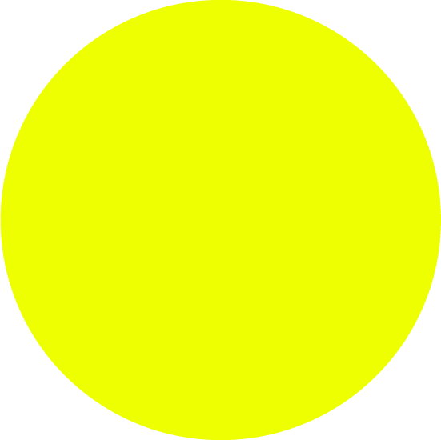

MOSS

Moss is a gardener’s pocket aid mobile application. With features like a gardening dictionary, tool collection, reminders, and weather tracker, this provides a holistic solution for anyone finding it hard to keep track of their green friends. Personal information of each plant can be stored and updated- enabling a more ergonomic feel. It informs and suggests notions with the best interest of the plants in mind. The design is an organic interface coupled with intuitive navigation. This clean and simple UI model is made to follow an agrestal theme. The pallet is inspired by colors in nature and the dark theme pushes the contrast between 2 ends of the spectrum. The design has tried to maintain the industry standard layouts so users of several age groups will find it easy to use while taking creative liberty on the marriage of several layers and color schemes.